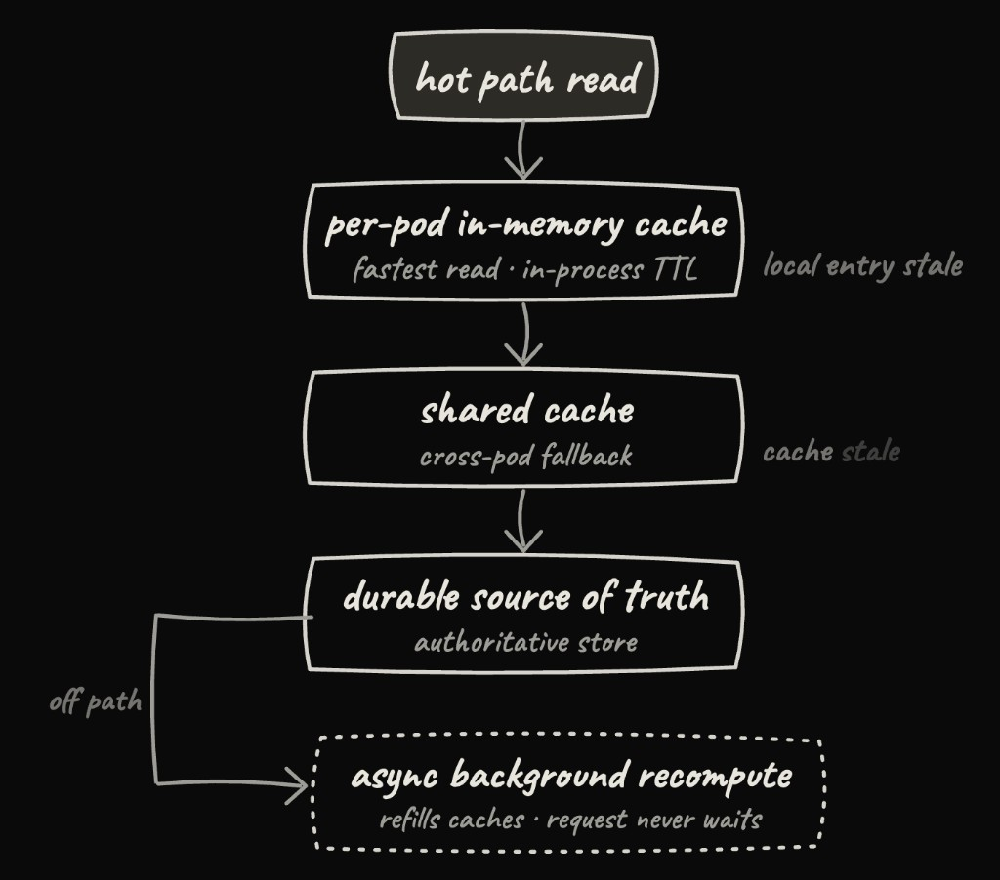
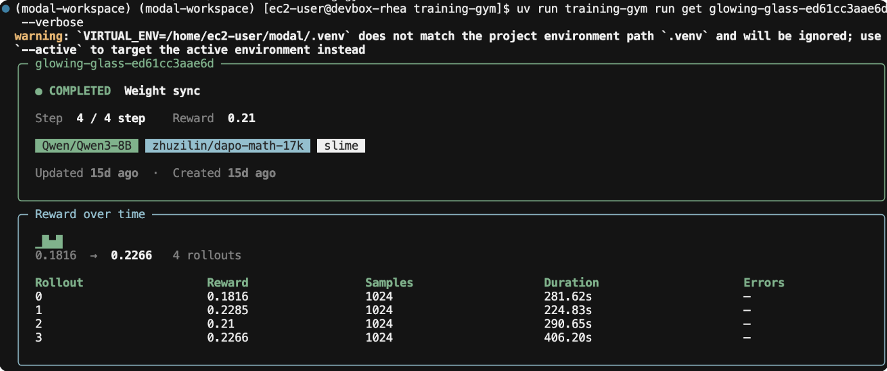

Modal一名实习生把夏天拆成两半：先在产品工程团队做环境级预算，用分层缓存守住『低延迟』这条核心承诺；再转到训练团队，把一个能自动完成一次RL后训练的agent从CLI一路训练到会做研究判断。
这篇文章讲两种不同的问题：一个是热路径上一个缓存读都会被视为成本的地方该如何优化，另一个是怎么把隐性经验显式地教给一个agent。两条线都落在一件事上，能被自己清楚讲出来的方案才值得上线。
作者先加入产品工程团队，负责客户最直接接触的部分：核心仪表盘、认证、可观测性，以及让大公司愿意把重负载托付给Modal的企业级功能。
凡是服务过企业客户就知道，他们永远想要更细粒度的数据和花销控制。在Modal里，客户通常拥有一个工作区(workspace)，每个工作区内又能放多个环境(environment)。过去Modal在工作区层面计费并执行预算：设一个上限，用量一旦触顶，新任务被拦下、运行中的任务可以被抢占。
如果不考虑客户现在怎么用Modal，这套机制本来够用。客户常把工作区拆成多个环境，一个团队一个、一个研究者一个，或按开发/生产/预发布切分。单一工作区级开关防不住一件事：某个研究环境里失控的agent会悄悄耗尽维持生产环境运转的那笔预算。需求于是清晰：让管理者能给单个环境设预算，且行为要和工作区预算完全一致，只是低一级而已。
作者的第一反应是这很简单：工作区预算已经存在，只要低一层照加相同字段、镜像同样的执行逻辑即可。
对工作区而言，每次执行检查都会从共享缓存读一个标志位，表明工作区用量是否触顶。作者支持环境预算的天真方案，是在同一个热点上再读第二个环境级标志位，于是每次检查的缓存读从1次变2次。
问题是这些检查住在哪。预算执行落在这款产品大量最热的路径上：每次创建沙箱(sandbox)、每次部署端点(endpoint)等。给其中每一条都加一次缓存读，等于对我们在卖的东西课税，也就是低延迟。当一个用户调用函数或启动沙箱，从请求发出到代码真正跑起来的这段间隔，是核心价值主张。此前作者从没写过一次额外缓存读就能算昂贵的代码，在这里学会了把延迟当作一等产品关切。
每次执行检查都要对共享缓存做一次往返，所以第二次(环境级)读取只有在整条读路径先变快以后才能免费获得。最终方案是分层的缓存架构：热路径不再一路伸到共享缓存，而是先在每个pod进程内的内存TTL缓存里读，这是最快的一级；当本地条目过期，路径回退到共享缓存；只有当共享缓存本身也过期，才会触达持久化的真相源。那最后一次重算异步在后台完成，触发它的请求永远不必等待。
把本地缓存推广为预算执行读路径的默认，让环境预算在延迟上几乎零成本落地，还改进了既有系统，而不是在旁边硬加第二套。
等作者定下上面的缓存方案，已经在许多小决策上撞过足够多的死胡同，注意到一个规律：每个被放弃的设计，都是自己没法一次全装进脑子的；每个真正上线的，都是能三两句话讲清楚的。
最清楚的例子是刷新问题。客户的用量刷新该用定期间隔的异步后台循环吗?还是排队在每个热路径读上?还是混合，取决于各级缓存当时有多旧?每个选项单看都站得住，但当一个请求是否被拦，取决于那一刻各缓存层恰好有多旧时，这不是对的做法。凌晨三点排查客户投诉的人，不该为了搞清某人为什么被拦而去重建一棵决策树。刷新规则于是变得极简：先查本地缓存，未命中回退共享缓存，仅当共享缓存也未命中才回退持久源，所有刷新异步后台做，让任何请求都不等待。
同样的直觉，也让作者把工作区执行重整到新路径上，而不是让它继续原样跑。只把环境预算当独立功能加、不去碰已工作的部分，会快得多。但那样每个未来被带教的工程师都会好奇，为什么两个几乎相同的功能用两套不同机制。把它们收敛成一个所有执行路径都调用的单一集中点，不仅更优雅，也让未来工程师只需理解一套机制。
这张图展示了用于环境级预算执行的分层缓存架构：本地缓存扛住绝大多数读，共享缓存作为次级，持久源只在最末端才被触碰。

写代码只完成了工作的一半，剩下的是在生产里证明它，以及搭建让用户愿意信任它的一切周边。
特性开关被缓慢放量：先几个内部工作区，再一小批试点客户，随后逐步推向所有人，每一步都盯着缓存负载和热路径延迟。同时补全一个花费功能在上线前需要的一切面：审计日志、跟踪相关指标的Datadog仪表盘、给内外部看的文档。
随着放量开始，客户主动找过来说一直在等这个功能。这是最清晰的落地影响信号：团队终于能把实验性花销隔离出来，而不危及其余工作负载，这对特别依赖Modal的机器学习工程团队尤其重要。
Modal的训练团队相当新，作者很好奇在更贴近工程与研究交界的团队上做事是什么感觉。和Joy聊过后，确定参与Modal的强化学习(RL)产品训练场(Training Gym)。这是一个基于Modal基础设施的开源RL库，用来轻松启动和监控RL后训练(post-training)运行。
给不熟的读者一段快速的RL入门：想让模型更会解数学题，就喂它一批题，让它每题生成若干尝试，用一个奖励函数(这里大概是答案对不对)给每次尝试打分，然后把模型权重往高分方向推、压离低分方向。重复足够多次、覆盖足够多题目，模型就更擅长数学。这个过程就是强化学习。
越来越多人不想自己盯着每次RL训练跑，宁愿把一个目标交给agent，让它完成大部分工作。这个趋势让训练场的agent体验成为优先级，等作者开工时，一个指向训练场的agent已经能写训练配置、启动运行、全程看着它跑。
短板出现在启动之后的环节。训练场的可观测性藏在一块仪表盘和一组REST接口后面，agent想读同一片信息，常得去解析仪表盘的HTML，很难稳定读到做判断所需的数字。即便拿到数字，它常常也不知道该拿它们做什么。
于是项目分两块：一是把训练场的可观测性做成适合agent的形态(命令行CLI)，二是把人类研究者会做的判断教给agent(一个技能skill)。
写CLI本身很容易，难的是想清楚它背后的数据建模。仪表盘里几乎所有可观测性都是在浏览器前端用JavaScript拼出来的：把各次运行关联、把数据归一化成研究者能读的样子。要让CLI看到人类在仪表盘看到的同一视图，得先把这块逻辑拉回后端，决定存什么、存成什么形态、如何流向任何消费方。这层存在了，CLI几乎随手就能写，只是坐在仪表盘旁的又一个消费者，而仪表盘也被改成消费同一套后端。
接着是一类不同的问题：当界面的主要使用者是agent而非人时，界面该长什么样?为agent设计意味着少想界面是否直观，多想它给没给agent足够的信息让它自行恢复。
为此每个命令都加了 -j / --json标志，让agent轻松解析结构化输出。报错也会指名下一步该跑什么：不只返回 运行未找到(run_8f2a not found),CLI会建议试试跑一条列出近一周训练运行的命令(run list)，好找到想要的ID。而默认输出对人类友好：

最后一点也许反直觉：一个给agent建的CLI，默认输出为什么对人类友好?关键在于，没人会把自己没法复核的工具交给agent去跑一次训练。给人类足够好的信号，他们才愿意先把这活托付给agent。
现在我们有CLI，能给agent对一个训练运行的实时可观测性了。光靠它，agent就够聪明到能自己给模型做后训练吗?作者希望如此，但第一次运行，agent就连CLI都找不到，直接掉回刮取仪表盘。这印证了一开始的猜测：需要一个技能，可靠地把agent缺失的那部分知识编码进去。
快速背景。技能(skill)是一个文件夹的指令，agent可以拉进上下文。每个技能的名字和描述会永久加载进agent的提示词，而正文只有在agent判断描述匹配它正在做的事时才被加载。
这个约束把结构决策变简单了。一组平铺的同族技能意味着好几条常驻描述在抢注意力，所以作者改用一个技能，外加按需拉取的参考文件(references)。这样agent永远只看到一条描述，参考文件直到agent需要它们才产生成本。
要写出这些参考文件，作者必须自己跑agent驱动的训练，观察agent的失败模式落在哪。循环永远一样：跑agent、看它失败、找出缺失的研究判断、把它教给agent，再重复。
最初的失败是行为层面的。agent会启动一个运行然后干等，直到跑完才再看一眼，把作者建的CLI里那些运行中观测数据全浪费了。然后是更难的：比如知道什么时候该及时止损，这是人类也常犯的判断错，agent更不容易知道何时该退出。于是作者往技能里加了提前停止(early stopping)条件，去指导今后的agent驱动训练。
一直看着agent用快进的速度在RL上失败，让作者学到很多RL本身。几次有意思的运行教会了作者：
第一，奖励只是代理指标。上升的奖励曲线不代表模型真的在变好，某些算法下它甚至更有欺骗性。组相对策略优化(GRPO)是大量RL后训练背后的主力：对每个提示词采样一组回答、全部打分，把模型推向超过组均值的回答、压离低于组均值的。DAPO在GRPO上加了几处改动，其中之一是动态采样：它扔掉整组得分相同(全对或全错)的提示词，因为无差异的组给不出有用的学习信号。随着模型变强，简单提示词开始被答对，于是被过滤掉，批次里剩下的越来越难。结果是平均训练奖励可能走平甚至下降，但模型其实在真的变好，只是每一步都在更难的一套考卷上被打分。看过agent因这条误导性的训练奖励曲线而提前停掉好几局之后，作者把它作为警告写进技能。
第二，去看输出。作者有次训练一个模型讲笑话，奖励曲线很漂亮，但拉出追踪(traces)后发现模型收敛到一个银河主题的答案模板上，稳定骗过高分评判器(LLM judge)。模型只是找到了窃取奖励的办法，而奖励基于一个LLM评判器(顺带一提，想让某大模型觉得你好笑，只要来点银河主题的胡言乱语)。在这个场景里，奖励曲线只显示打分器怎么想，输出才告诉你模型真正学到了什么。
更广泛的收获是：训练里最复杂的部分，是奖励是否度量了你真正关心的行为、证据是否撑得起更多算力、一项改进能否泛化、下一个实验该隔离什么。一个好的训练循环本质是降低不确定性的过程：形成假设、设计验证它的实验、检查发生了什么、决定下一步试什么。把agent建起来，逼着作者把这个循环显式化，因为任何留在潜意识里的东西，最后都变成agent会做错的地方。试着去教它，让作者自己跑实验时也更刻意。
为了测试，作者故意用了很含糊的提示词，比如你能不能后训练一个永远押韵的模型。在花一分钱上显卡(GPU)之前，agent就意识到这个奖励可以被轻易欺骗(产出押韵废话就能拿高分)，于是它把奖励打分器写成单独测试的模块，对押韵、不押韵和退化的输出都跑一遍，提前就抓住真实的可利用漏洞。然后它及早杀掉一个跑得慢的配置，训练出一个能工作的模型。演示如下：
到这一步，影响已经不只是agent能启动训练运行。它能拿一个定义不全的目标，做出把它变成真实实验的绝大多数决策：挑选并测试奖励、诊断失败、检查追踪、迭代配置、判断什么时候更多算力不再值得。
想装这个技能并用CLI跑你自己的agent驱动训练，全套都在这里。
参考：https://rhea24.github.io/writing/low-latency-and-model-training-at-modal/